Android StudioJava 11Room / SQLite Sin internet18 pruebas JUnit
Alumno: Emilio Garduño Servín · Modalidad: individual · Paquete: com.cesba.godzipet · minSdk 24 / targetSdk 36
El jugador recibe un huevo de kaiju (como en la serie, donde el Dr. Nick Tatopoulos y el equipo H.E.A.T. cuidan a la cría de Godzilla en Nueva York). Al tocarlo 5 veces eclosiona una cría que vive en un muelle de la bahía de Manhattan. Sus necesidades bajan con el tiempo real (aunque la app esté cerrada) y cada decisión cambia su estado, su economía y la forma final en la que evolucionará: Guardián, Atómico o Salvaje.
Todo el arte (Godzilla, escenario, guarida, monstruos) está dibujado por código con Canvas en estilo caricatura de los 90 (contorno grueso, aletas dorsales afiladas, rayas granate como el diseño de la serie), por lo que no usa imágenes con derechos de autor y pesa poco.
| # | Experiencia pedida | Dónde se cumple |
|---|---|---|
| 01 | Nueva partida, elegir personaje y nombre | InicioActivity → SeleccionActivity (3 huevos con imagen, descripción y bono inicial + nombre validado de 2–14 caracteres) |
| 02 | Consultar necesidades y cuidarlo | HogarFragment: 5 barras + valor numérico, mensaje contextual y 6 acciones |
| 03 | Minijuegos por monedas y XP | DefensaActivity (reflejos) y MemoriaActivity (parejas) |
| 04 | Comprar y administrar inventario | TiendaFragment con pestañas Tienda / Inventario |
| 05 | Decorar, misiones, evolución | GuaridaFragment, MisionesFragment, ProgresoActivity |
| 06 | Cerrar y reabrir sin perder la partida | Room + marca de tiempo ultimaActualizacion; guardado tras cada acción, cada 10 s y en onPause |
Inicio de sesión: cuentas locales (LoginActivity) — no requiere internet. La contraseña se guarda como hash PBKDF2 + sal aleatoria, nunca en texto plano. Cada usuario tiene su propia partida.
| Capa / paquete | Clases | Responsabilidad |
|---|---|---|
modelo (Java puro, probado con JUnit) | Personaje, Necesidades, Stat, EstadoAnimo, Etapa | Identidad, etapa, sueño; 5 indicadores con límite 0–100; reglas de estado |
Partida, Deterioro, Contadores | Estado completo, paso del tiempo real, historial de hábitos | |
Cuidados | 6 acciones + Aliento Atómico con validaciones | |
Articulo, Catalogo, Tienda, Inventario, Guarida, Slot | Economía, inventario y decoración | |
Mision, GestorMisiones | Condiciones, avance y recompensa única | |
Niveles, Evolucion, RutaEvolucion | Progresión, regla de evolución y ventajas | |
Minijuego, Record, AlertaKaiju | Premios proporcionales, récords, mecánica exclusiva | |
datos | BaseDatos (Room), JuegoDao, 6 entidades, Repositorio, Preferencias, Seguridad | Persistencia en hilo de fondo, guardado atómico (@Transaction) |
juego | Juego, Alertas, AlarmaReceiver, Sonidos | Partida en memoria, notificaciones locales, sonidos sintetizados (rugido) |
vista | KaijuPainter, PetView, GuaridaView, DefensaView, BarraView | Dibujo vectorial y animaciones |
ui | 8 actividades y 5 fragmentos | Pantallas y navegación |
| Tabla | Guarda |
|---|---|
usuarios | usuario (único), sal, hash |
partidas | personaje, etapa, ruta, 5 estadísticas, sueño, ultimaActualizacion, monedas, XP, carga de aliento, alerta kaiju, tiempos de espera y contadores de hábitos |
inventario | artículo y cantidad por usuario |
decoraciones | decoración equipada en cada posición |
misiones | recompensas reclamadas (día o "LOGRO") |
records | mejor puntaje, victorias y partidas por minijuego |
Las preferencias simples (sesión, sonido, notificaciones, modo demo) van en SharedPreferences.
| Indicador | Despierto (por hora) | Dormido (por hora) |
|---|---|---|
| 🐟 Alimentación | −8 | −4 |
| 🫧 Higiene | −5 | −2 |
| ⚡ Energía | −4 | +120 |
| 😊 Felicidad | −4 (−8 si alimentación o higiene < 30) | la mitad |
| ❤ Salud | −6 si alimentación o higiene < 20 o energía < 10 · +2 si el promedio ≥ 60 | |
casoObligatorio_80DeAlimentacionBajaA64TrasDosHoras y verificado en el emulador). El cálculo se hace en pasos de 1 minuto, separando el tramo dormido del despierto, con tope de 7 días.Modo demostración (Configuración): el tiempo corre ×20 (1 min real = 20 min de juego) para poder mostrar el deterioro en clase. La ruta Salvaje multiplica el deterioro ×1.25 y la Guardián reduce a la mitad la pérdida de felicidad.
Prioridad: Dormido → Enfermo (salud < 30) → Hambriento (alim. < 25) → Sucio (higiene < 25) → Cansado (energía < 20) → Triste (felicidad < 35) → Feliz (felicidad ≥ 75 y promedio ≥ 65) → Normal. Cada estado se ve distinto: ojos cerrados y "Zzz", piel pálida con párpados caídos, burbuja pensando en pescado, manchas y moscas, nube con lluvia y lágrima, notas musicales y rebote, etc. Debajo aparece un mensaje contextual que explica la reacción.
| Acción | Efecto | Restricciones |
|---|---|---|
| 🐟 Alimentar | Según la comida (p. ej. atún +25 alim. +6 fel.) | Requiere comida en el inventario (la consume); no si está lleno (≥95) o dormido |
| 🎾 Jugar | +15 fel., −10 energía, −5 alim., −5 higiene | Energía ≥ 15, espera de 20 s, despierto |
| 💤 Dormir | +5 energía, +3 salud y recupera +120/h durante 20 min de juego | Energía < 85. Si ya duerme, el botón cambia a "Despertar" (−5 fel.) |
| 🫧 Bañar | Con jabón: +40 higiene +5 fel. · sin jabón: +15 higiene −3 energía | Higiene < 95; el baño gratis tiene espera de 60 s |
| ⛑ Curar | +35 salud, +5 energía, −4 fel. | Requiere Botiquín H.E.A.T.; salud < 95 |
| 💪 Entrenar | −20 energía, −10 alim., −10 higiene, +5 fel., +20 aliento, +15 XP | Energía ≥ 25, alim. ≥ 20, salud ≥ 30, espera 30 s |
Cada acción reproduce una animación ("¡ÑAM!", burbujas, "¡POW!", corazones, cruces verdes), un sonido de éxito o error y se guarda de inmediato.
Inspirado en el "power breath" verde de Godzilla en la serie. Una barra de carga 0–100 se llena al entrenar (+20) y al comer pescado radioactivo (+25). Se desbloquea en el nivel 3. Con 100 aparece el botón ¡ALIENTO ATÓMICO!: un rayo verde cruza la bahía con sacudida de pantalla y rugido (+25 felicidad, +20 XP). En el minijuego Defensa se puede usar una vez para destruir a todos los monstruos, y en una Alerta Kaiju garantiza la victoria. La ruta Atómico la carga al doble.
Como en cada episodio de la serie, monstruos mutantes atacan Nueva York (cangrejo mutante, murciélago colosal, calamar radioactivo…). Desde el nivel 3, cada 10–25 min de juego aparece un aviso rojo con cuenta regresiva de 8 min. DEFENDER cuesta 20 de energía y requiere salud ≥ 30; la probabilidad de ganar depende de energía y salud (gana +40 monedas, +30 XP). Si se ignora —incluso con la app cerrada— la ciudad sufre daños: −15 felicidad y −5 salud al volver.
| 🌊 Defensa de la Bahía (reflejos) | 🧠 Memoria H.E.A.T. (parejas) | |
|---|---|---|
| Acceso | Nivel 1, cuesta 15 de energía | Nivel 2, cuesta 10 de energía |
| Interacción | Tocar monstruos antes de que escapen (aro de tiempo); cada vez salen más rápido | Voltear cartas 4×4 con animación |
| Victoria / derrota | ≥ 15 aciertos en 30 s | 8 parejas antes de 60 s |
| Puntaje | 10 por acierto | 10 por pareja + segundos restantes |
| Premio | puntaje/5 monedas (+20 si gana) | puntaje/4 monedas (+15 si gana) |
Ambos tienen instrucciones, inicio, opción Repetir, guardan mejor puntaje y victorias, y salir a mitad de la ronda cuenta como derrota con el puntaje parcial.
| Tipo | Artículos (precio · nivel) |
|---|---|
| Comida (3) | Lata de sardinas 8 · Atún gigante 15 · Pescado radioactivo 30 (nv 2) |
| Cuidado (3) | Jabón marino 12 · Botiquín H.E.A.T. 35 · Isótopo energético 40 (nv 3) |
| Decoración (10) | Ventanal: Skyline de Manhattan 60, Arrecife 80 (nv 2), Isla Monstruo 110 (nv 3) · Izquierda: Helicóptero 50, Barco pesquero 70 (nv 2) · Derecha: Antena torcida 45, Mini Estatua de la Libertad 120 (nv 4) · Suelo: Alfombra de algas 35, Conos aplastados 25, Charco radioactivo 55 (nv 3) |
Compra bloqueada sin saldo (indica cuánto falta), por nivel, por decoración repetida o inventario lleno (99). Consumibles bajan su cantidad al usarse; decoraciones se equipan sin consumirse en 4 posiciones fijas de la guarida, sólo si se poseen, y se ven igual al reabrir la app.
| Nivel (XP) | Desbloqueo |
|---|---|
| 1 (0) | Defensa de la Bahía y tienda básica |
| 2 (60) | Memoria H.E.A.T., pescado radioactivo, arrecife |
| 3 (150) | Evoluciona a Juvenil, Aliento Atómico, Alertas Kaiju, isótopo |
| 4 (280) | Mini Estatua de la Libertad |
| 5 (450) | Evolución final |
| 6 (700) | Título "Rey de los Monstruos": +10 monedas por misión |
Misiones diarias (se renuevan a medianoche): alimentar 3 veces, jugar 2 minijuegos, entrenar 2 veces. Logros (permanentes): llegar a nivel 4, ganar 5 minijuegos, equipar 3 decoraciones, ganar 3 Alertas Kaiju, alcanzar una forma final. Cada recompensa se marca como reclamada (con el día, en las diarias), por lo que no puede cobrarse dos veces.
Notificaciones (canal propio; en Android 13+ se pide el permiso POST_NOTIFICATIONS): al salir de la app se programan con AlarmManager inexacto (1) la necesidad crítica, calculando cuándo la alimentación o la higiene llegarán a 20, y (2) el fin del descanso si está dormido. Se cancelan al volver.
Validaciones: límites 0–100 en una sola clase; nombre y usuario con patrón; compras sin saldo; acciones imposibles con mensaje claro; recompensas duplicadas; reinicio con doble confirmación (hay que escribir REINICIAR); nueva partida pide confirmación si ya existe una.
18 pruebas JUnit (app/src/test), todas en verde: límites de estadísticas, estados por reglas, caso obligatorio de tiempo, modo demo, eclosión, consumo de inventario, sueño y despertar automático, esperas, compras sin saldo, equipar sólo lo propio, misiones sin doble reclamo y renovación diaria, evolución Juvenil/Final y las 3 rutas. Además se probó todo el flujo en el emulador Android 14 (capturas abajo).
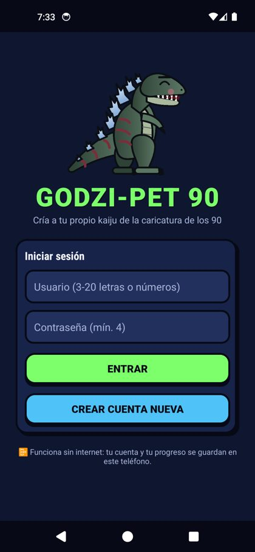
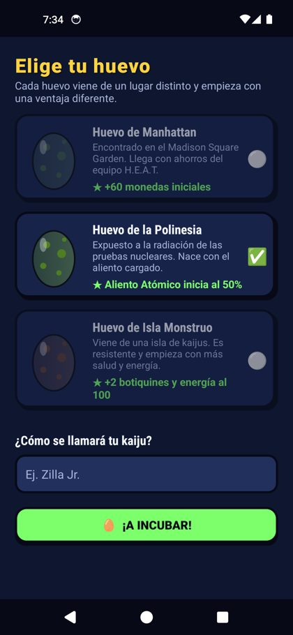
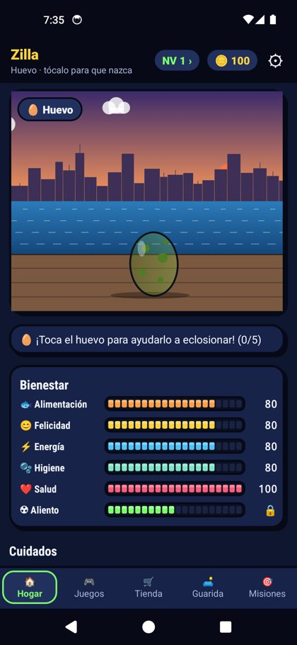
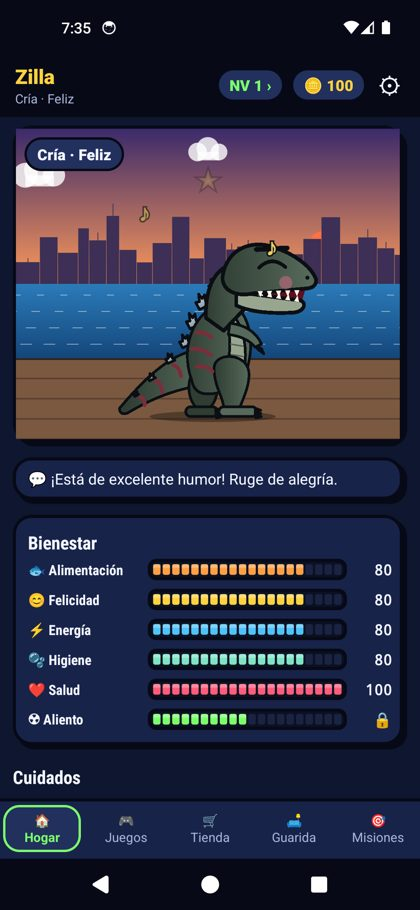
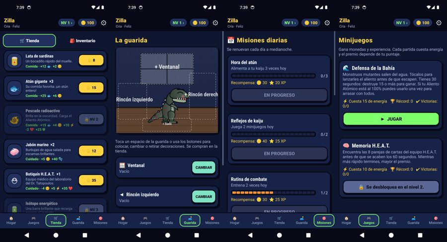
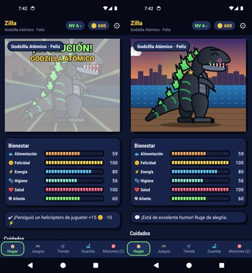
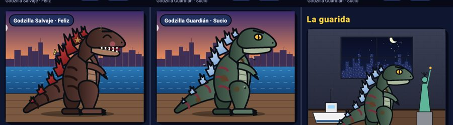
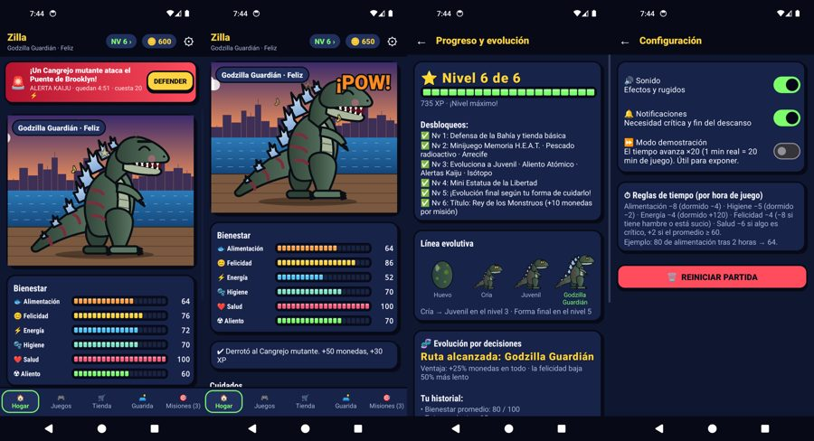
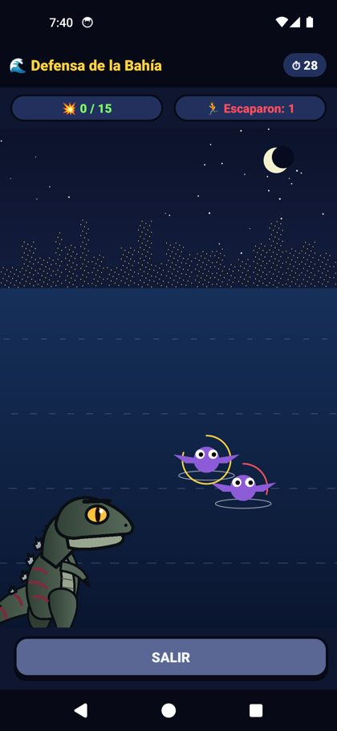
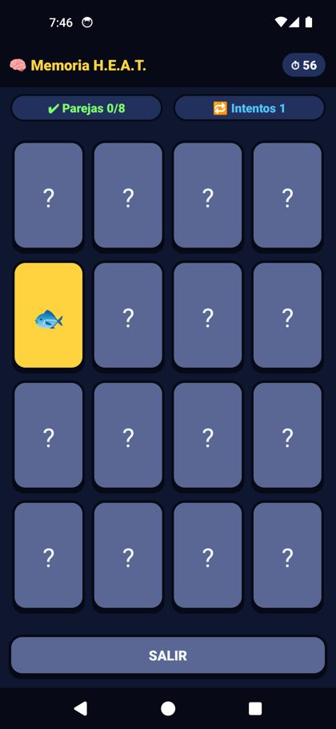
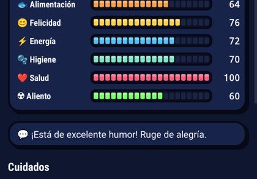
Ejecutar: abrir la carpeta GodziPet90 en Android Studio y pulsar Run, o instalar app/build/outputs/apk/debug/app-debug.apk.